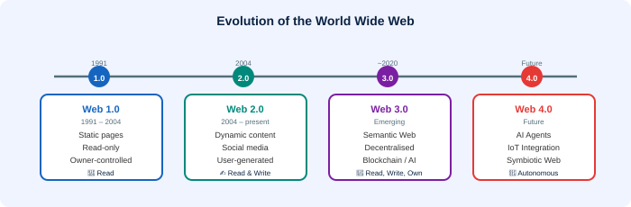

🚀 Web 1.0, Web 2.0, Web 3.0 & Web 4.0
The four generations that define the evolution of the World Wide Web

The Web has evolved through distinct generations — from simple static pages (Web 1.0), to interactive user-driven platforms (Web 2.0), to decentralised semantic computing (Web 3.0), and towards intelligent, autonomous systems (Web 4.0).
🌐 Web 1.0 — The Read-Only Web (1991–2004)
Key Characteristics
- Mainly static HTML pages — content doesn't change unless the developer edits the file
- One-way communication: information flows from the website to the visitor only
- No user-generated content — visitors can only read, not contribute
- Driven and controlled by the organisation that owns the website
- No social features, no comments, no interactivity
Examples: Early company websites, online brochures, simple news pages (late 1990s – early 2000s)
🔄 Web 2.0 — The Read-Write Web (2004–present)
Key Characteristics
- Dynamic, user-generated content — visitors can contribute, comment, share
- Two-way communication: information flows both ways between site and visitor
- Social media, blogs, forums, wikis — driven by users not just organisations
- Web becomes a platform for participation, not just information
- AJAX enables smooth, dynamic page updates without full reloads
Web 1.0 websites were constructed so that information and ideas flowed only one way. Web 2.0 websites allow information to flow two ways. Many static websites evolved by adding blogs and forums.
Examples: Facebook, YouTube, Wikipedia, Twitter, WordPress blogs
🧠 Web 3.0 — The Semantic/Decentralised Web (emerging)
Key Characteristics
- Semantic Web — machines understand the meaning of web content, not just the structure
- Decentralisation — no central authority controls data; users own their data
- Blockchain technology — transparent, tamper-proof records
- AI integration — intelligent search and personalised experiences
- 3D Web — immersive experiences (metaverse, spatial computing)
Examples: Decentralised applications (dApps), NFT platforms, AI-powered search engines, cryptocurrency wallets
🤖 Web 4.0 — The Intelligent/Symbiotic Web (future)
Key Characteristics
- Ultra-intelligent web — machines think and act autonomously
- Deep integration with physical world through IoT (Internet of Things)
- Brain-computer interfaces and augmented reality integration
- Fully personalised, predictive, and proactive web experiences
- Web agents that act on your behalf without being asked
Examples (anticipated): Fully autonomous AI assistants, smart city infrastructure, immersive digital-physical environments
Comparison Summary
| Version | Era | Nature | Control |
|---|---|---|---|
| Web 1.0 | 1991–2004 | Read-only, static | Website owners |
| Web 2.0 | 2004–now | Read-write, interactive | Users |
| Web 3.0 | Emerging | Semantic, decentralised | Community/blockchain |
| Web 4.0 | Future | Intelligent, symbiotic | AI & machine agents |
💡 Key Fact: The shift from Web 1.0 to Web 2.0 fundamentally transformed the Internet from a broadcasting medium into a participatory platform. Regular people now expect websites to be interactive and responsive. Those that remained static fell increasingly behind.